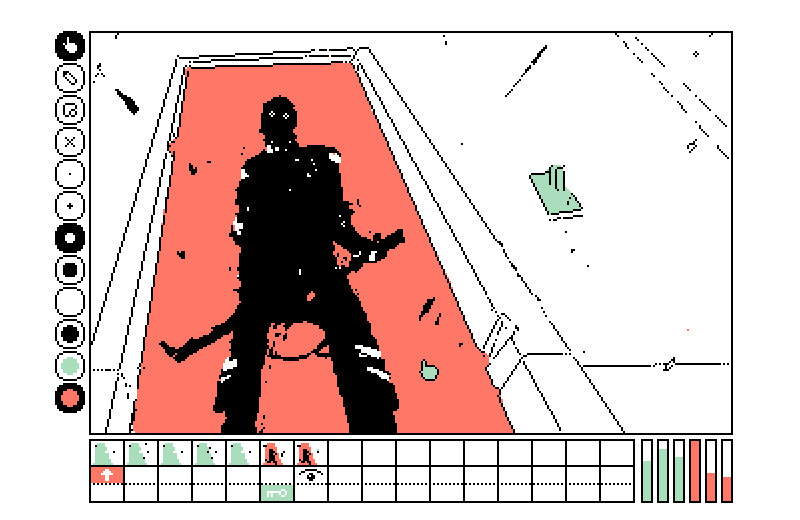

software
The Software portal is a collection of interactive applications.
The Software archive is a collection of Free & Open-source projects.
These projects were made possible by the help of countless developers who fixed issues, submitted pull requests and spent time improving the code.

nataniev
The Nataniev ecosystem is a collection of exocortex tools.
tools
The Tools collection is an ecosystem of open-source software to create audio and visual works, released as Hundred Rabbits.
utilities
The Utilities are a collection of little tools created solve specific problems.
games
The Games are a collection of experimental interactive projects.
mobile
The Mobile collection is both mobile tools and games.
automatons
The Automatons is a collection of Twitter games and chatbots.
unity
The Unity collection contains various older desktop games.

collegiennes
The Collegiennes collective is a game jam team.